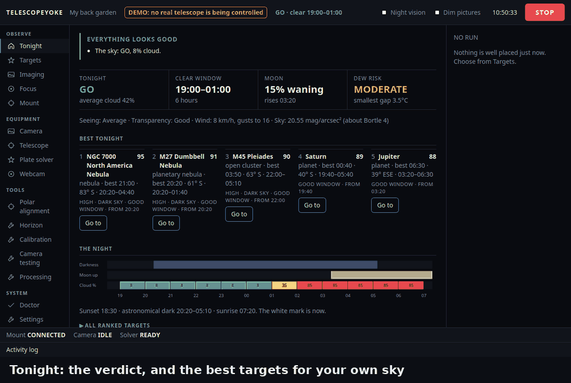
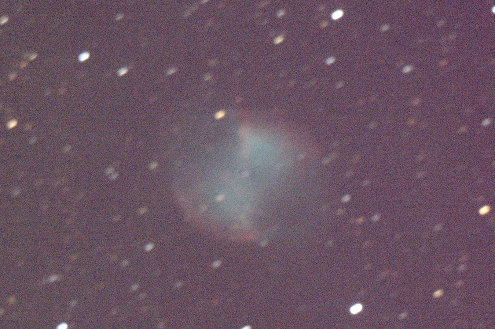
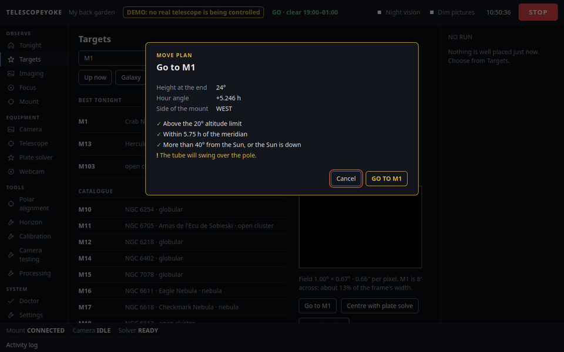
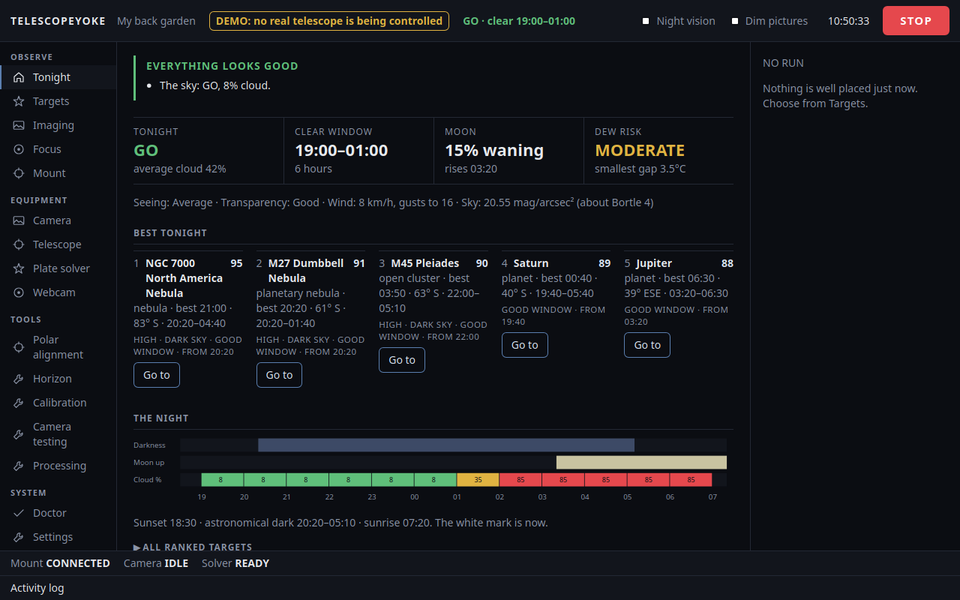
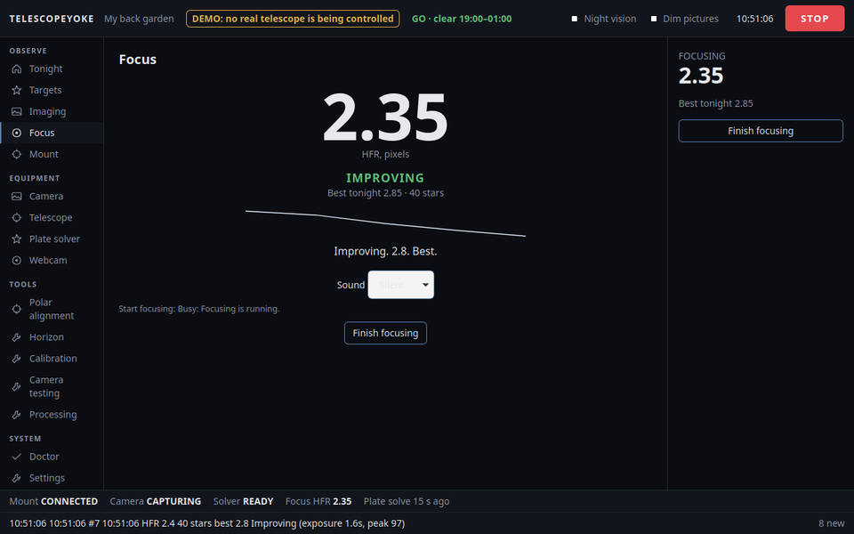

TelescopeYoke
Smart-telescope features for ordinary Sky-Watcher SynScan gear.
Free and open source. Runs on a laptop beside the telescope: Linux, with a Windows port.

What it does
You already own the mount, the handset and a camera. TelescopeYoke is the part a smart telescope has and yours does not: it works out where the telescope is really pointing and puts the target in the middle of the frame.
- Plans the night: darkness, Moon, cloud, and a GO / MARGINAL / NO-GO verdict, with targets ranked for your own sky and your own blocked horizons.
- Controls Sky-Watcher SynScan mounts through the handset's serial lead, correcting for a handset clock that is wrong.
- Plate-solves and centres every GoTo, so a home position set by eye and a rough polar alignment still land the target on the sensor.
- Talks you onto focus: turn the focuser and listen for "Best focus. Hold".
- Takes and stacks the pictures: short exposures, each one checked, poor ones rejected, the rest lined up and added.
- Keeps the mount inside its limits. Every move is checked first and shown as a plan; nothing turns until you confirm it.
It runs on your own computer. No account, no cloud service, no ASCOM.
A real result


Try the demo: no telescope needed
The demo is the whole application on a pretend telescope. Nothing is connected to your mount and nothing can move, so it is safe to try on the computer that sits beside real equipment.
Ubuntu or Debian
wget https://github.com/Ryan-Clinton/telescopeyoke/releases/download/v0.2.0/TelescopeYoke-v0.2.0.zip
unzip TelescopeYoke-v0.2.0.zip
cd TelescopeYoke-v0.2.0
./install.sh --demoWindows 10 or 11
- Install 64-bit Python 3.11 or newer from python.org, ticking "Add python.exe to PATH".
- Download TelescopeYoke-v0.2.0.zip and unpack it.
- Double-click
try-demo.cmd.
A window opens with tonight's report. Pick a target, press "Centre with plate solve", and watch it find and correct its own pointing error. Then try Focus and Imaging; "The pretend sky" lets you bring cloud over or pull the camera's lead out, to see what it does when a night goes wrong.


Supported hardware
It is new, and it says plainly what it has and has not been proven on. So far it has run on one telescope, the author's:
| Mount | Handset | Camera | System | What has worked | Tried by |
|---|---|---|---|---|---|
| Sky-Watcher EQ3 Pro | SynScan, firmware 3.35 | Altair Hypercam 183C | Ubuntu 26.04 | Planner, mount moves, camera, focusing, plate solving and GoTo with centring, under real stars | the author |
| the same EQ3 Pro | the same | the same | Windows 11 | The demo, and camera frames indoors. No mount driven yet | the author |
| EQ5 | SynScan | any | Linux or Windows | wanted | could be you |
| HEQ5 | SynScan | any | Linux or Windows | wanted | could be you |
| EQ6, EQ6-R | SynScan | any | Linux or Windows | wanted | could be you |
| a mount with an EQStar or other EQMOD-style controller | none | any | Linux or Windows | wanted: whether it answers at all | could be you |
EQ5, HEQ5 and EQ6 mounts with a SynScan handset speak the same serial protocol, so they are likely to work, but nobody has tried. On Linux the camera is read through INDI; on Windows only Altair cameras are supported. ASCOM is not used, and an EQMOD or ASCOM setup you already have is left alone: close EQMOD while TelescopeYoke has the mount's port, and the other way round.
./doctor.py --report only looks at what is connected: it writes out what the handset says the mount is, its firmware, and what was found, with your location left out. Paste that into a
hardware report, or ask first in
Discussions. Your name goes beside your row if you want it there.
Find out more
- The README: everything it does, and exactly what has been proven on real hardware.
- Setup: installing it for a real telescope, on Ubuntu and on Windows.
- Changes in each release.
- Discussions: questions, ideas, and pictures you have taken.